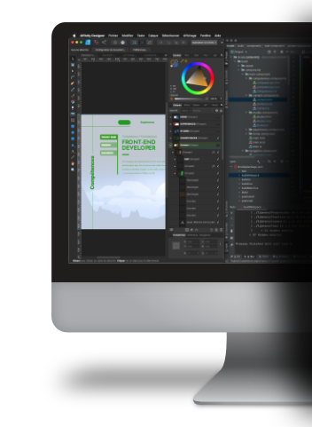
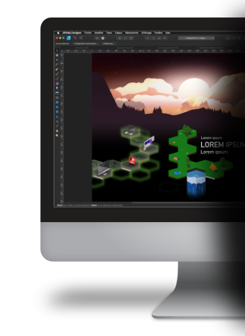
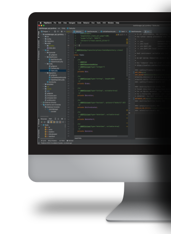

<div id="tabsCompetences" class="tabs">
    <div class="row">
        <div class="col-6 col-m-6 col-s-12">
            <div class="tabs-images">
                <ul>
                    <li class="images show">
                        
                    </li>
                    <li class="images">
                        
                    </li>
                    <li class="images">
                        
                    </li>
                </ul>
            </div>
        </div>
        <div class="col-6 col-m-6 col-s-12">
            <div class="tabs-container">
                <div class="tab-content show">
                    <div class="tab-content-text">
                        <h1>Front-End developer</h1>
                        <div class="divider"></div>
                        <p>
                            Mes langages de programmations sont le Javascript/ Typescript, le css/ Sass,
                            html/twig/fxml, php. Pour les frameworks j’utilise BootStrap, materialize,
                            semantic-ui, Symfony, Angular, et des outils comme Gulp et Webpack, pour
                            le versionning Github et Gitlab avec Git.
                        </p>
                    </div>
                </div>

                <div class="tab-content">
                    <div class="tab-content-text">
                        <h1>Designer</h1>
                        <p>
                            Le graphisme est la première compétence que j'ai développer au
                            travers de mes études et de mes expériences proféssionnel avec
                            les outils Adobe tel que, Photoshop, Illustrator, Indesign,
                            Lightroom, Premier, After Effect,... et Affinity designer.
                        </p>
                    </div>
                </div>

                <div class="tab-content">
                    <div class="tab-content-text">
                        <h1>Web developer</h1>
                        <p>
                            J'ai acquis des compétences de developpement en PHP et MyQL au travers de
                            mes différentes expérinces professionnel. J'apprend le JAVA dans le bachelier
                            que je suis, au travers du cours de POO et d'algorithmie.
                            J'ai aussi entrepris l'apprentissage du python.
                        </p>
                    </div>
                </div>
            </div>
            <div class="tabs-nav">
                <ul class="tabs-nav-list">
                    <li>
                        <button class="btn-tabs active">Front-End</button>
                    </li>
                    <li>
                        <button class="btn-tabs">Design</button>
                    </li>
                    <li>
                        <button class="btn-tabs">Backend</button>
                    </li>
                </ul>
            </div>
        </div>
    </div>
</div>
